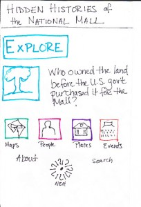
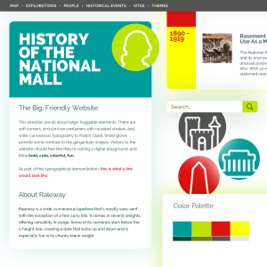
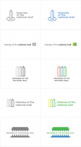
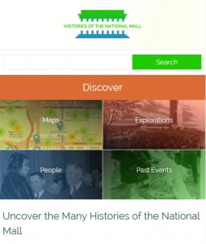

{kind=link}

The content and testing teams worked with small groups of users before finalizing the site architecture and developing the web design. Our user testing regime was not expensive, but required a concerted effort from the testing team to engage users at each stage of development, for content and user experience. We followed the principles outlined in Steve Krug’s Don’t Make Me Think: a Common Sense Approach to Web Usability.
We developed a user testing protocol (PDF) to evaluate the site flow using a paper prototype. Team members interviewed individuals unfamiliar with the Mall project by asking guided questions, taking notes, and encouraging testers to think out loud as they forged their own paths through the prototype. View the entire paper prototype (PDF).
Through this process, we identified strengths and weaknesses in the proposed navigational structure and better understood user expectations about site functionality, section names, navigational cues, and content. For example, the section titled “Events” in the prototype led most testers to think they would find a calendar of concerts, lectures, or other public programming scheduled for that day on the Mall. We revised the heading to “Past Events.” Re-testing confirmed that the revision clarified user expectations.
The content team began working closely with the web designer, as we followed an agile process of drafting, responding, and re-drafting until the designer and the rest of the project team were satisfied with the results. Following the feedback from initial rounds of user testing, the content team drafted a site map to help guide the designer who then built wireframes. Wireframes visualized the basic structure and hierarchy of the site and the navigational interface among site components.
Before moving to the next design phase, content team members were asked to describe in a few short phrases the feelings they wanted the site to evoke, and to describe the site’s desired look and feel with adjectives and short phrases. The project team wanted the site to be seen as trustworthy, reliable, friendly, slick, and savvy. These responses shaped the creation of mood boards that offered different options for the site aesthetic, including a color palette, layout, logo, and navigation styles for the site.
{kind=link}

The web designer created a series of four mood boards, each establishing a different look and feel for the site. The mood boards integrated the qualities team members considered important. In selecting a look and feel, the team paid close attention to the colors, graphic elements, design clarity and simplicity, and navigation appropriate for presenting the history of the National Mall. Once the team selected a mood board, the web designer moved ahead by drafting the theme in HTML, CSS, and PHP. As she designed the theme, the web designer also experimented with different styles and icons for a site logo.
{kind=link}

Meanwhile, the content team focused on refining heading names for navigational elements through a series of quick A/B testing. The content team fluctuated on whether the main navigational elements should be action verbs or nouns. The section now known as “Explorations,” had many different names, including “Investigations,” “Discover,” “Explore,” before we finalized that term.
As the site’s design coalesced, the content team refined the text and features on the homepage. The content team was asked to provide some guidance telling visitors how to use the site and to explain what a visitor would find on the site. The designer created a button on the homepage that linked to a short page called, Using the Site. We added sharing functionality for users to easily post site items on their favorite social media platform, such as Facebook or Instagram.
The design and development team worked together to refine the mapping responsiveness to marker selection and popup windows while browsing on the Mall. After further rounds of on-the-Mall user testing, we decided the map needed helper text and better icons for indicating that there were settings that could be adjusted by the user. The web designer added a Tool Tip to guide users new to the site through the map’s features and interface, and experimented with different icon styles and symbols. The text of the Tool Tip reads: “This is an interactive map. Click the “filters” button to the right to find historical map layers and ways to customize your map.”
{kind=link}

The final version of website represented more than two years of research, design, and development work from the entire project team. This iterative process let us address major issues and problems at each stage of development, resulting in a clear and usable end product.
When launched in March 2014, mallhistory.org offered users the opportunity to engage in a self-guided exploration of over 400 items, including people, sites, past events, and primary sources, with over 30 inquiry-based explorations. We created four different entry points: geographical (Maps); thematic (Explorations); chronological (Past Events); and biographical (People). Each section connected the physical space of the Mall with the social, cultural, and political events that have transpired there.
We further refined the site’s functionality based on user feedback after the launch to better connect the content across the site. Originally, People, (which are individual items in the site) were not linked to other items through the Dublin Core “creator” field in any way. When a user was reading the Arts and Industries building item and wanted to learn more about the architect Adolf Cluss, she clicked on his name and was directed to a list of other buildings that he designed. These links were made using the Search by Metadata plugin. The biographies of individuals were created as individual items but were not discoverable in that list. Some users expected to find the biography of the person populating the “creator” field. To solve the problem, the content team returned to the “People” items and entered the individual’s name in the creator field. The web designer made it possible for the creator field to remain hidden on those public item pages. Now biographies (People items) appear in the same list with items created/built/designed by that individual. This revision more fully integrated the different types of content into the overall site, and is an example of how the entire team worked together after the website launched to improve the user experience.